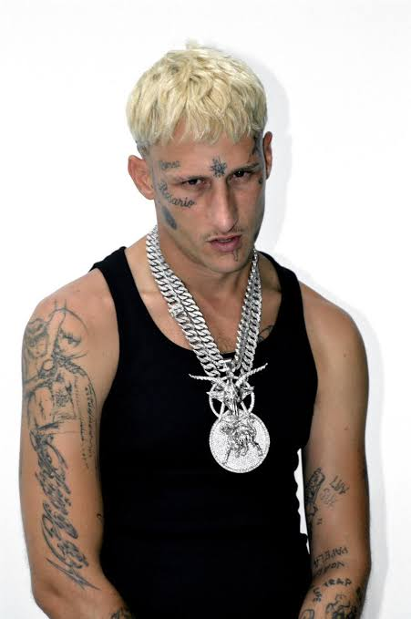

El trap en España no empezó en las listas de éxitos, sino en internet y entre amigos. Hacia 2013 apareció el colectivo Kefta Boyz, con Yung Beef, Khaled y El Mini, que vivían en ciudades distintas de Europa y subieron su primera mixtape, A.D.R.O.M.I.C.F.M.S., a Mediafire el día de Navidad de 2013.
En 2014 Yung Beef, Khaled, Kaydy Cain y el productor Steve Lean se instalaron en Barcelona y formaron PXXR GVNG. Su tema Million Euros Leggins les dio a conocer y en 2015 sacaron el disco Los Pobres con Sony Music. Con el tiempo el colectivo pasó a llamarse Los Santos.
Después llegó una segunda generación en Barcelona, con artistas como Pimp Flaco, que empezó con el grafiti y se hizo conocido hacia 2015 junto a su hermano Kinder Malo y el grupo Nigeria Dreams.

Puedes leer más en este artículo sobre la historia del trap en España o consultar los datos de los artistas en XML.